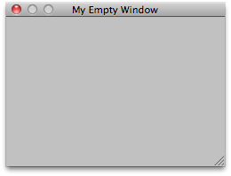

EditorWindow.GetWindow
public static EditorWindow GetWindow(Type t,
bool utility = false,
string title = null,
bool focus = true);
Parameters
| t | The type of the window. Must derive from EditorWindow. | |
| utility | Set this to true, to create a floating utility window, false to create a normal window. | |
| title | If GetWindow creates a new window, it will get this title. If this value is null, use the class name as title. | |
| focus | Whether to give the window focus, if it already exists. (If GetWindow creates a new window, it will always get focus). |
Description 描述
Returns the first EditorWindow of type t which is currently on the screen.
If there is none, creates and shows new window and returns the instance of it.

Simple Empty non-dockable window.
using UnityEngine; using UnityEditor;
// Simple script that creates a new non-dockable window public class EditorWindowTest : EditorWindow { [MenuItem("Example/Display simple Window")] static void Initialize() { EditorWindowTest window = (EditorWindowTest)EditorWindow.GetWindow(typeof(EditorWindowTest), true, "My Empty Window"); } }
public static T GetWindow();
public static T GetWindow(bool utility);
public static T GetWindow(bool utility,
string title);
public static T GetWindow(string title);
public static T GetWindow(string title,
bool focus);
public static T GetWindow(bool utility,
string title,
bool focus);
Parameters
| T | The type of the window. Must derive from EditorWindow. | |
| utility | Set this to true, to create a floating utility window, false to create a normal window. | |
| title | If GetWindow creates a new window, it will get this title. If this value is null, use the class name as title. | |
| focus | Whether to give the window focus, if it already exists. (If GetWindow creates a new window, it will always get focus). |
Description 描述
Returns the first EditorWindow of type T which is currently on the screen.
If there is none, creates and shows new window and returns the instance of it.
public static T GetWindow(params Type[] desiredDockNextTo);
public static T GetWindow(string title,
params Type[] desiredDockNextTo);
public static T GetWindow(string title,
bool focus,
params Type[] desiredDockNextTo);
Parameters
| T | The type of the window. Must derive from EditorWindow. | |
| title | If GetWindow creates a new window, it will get this title. If this value is null, use the class name as title. | |
| desiredDockNextTo | An array of EditorWindow types that the window will attempt to dock onto. | |
| focus | Whether to give the window focus, if it already exists. (If GetWindow creates a new window, it will always get focus). |
Description 描述
Returns the first EditorWindow of type T which is currently on the screen.
If there is none, creates and shows new window and returns the instance of it. The created window will attempt to be docked next to the first founds specified window type.